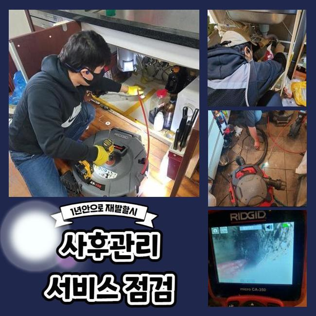
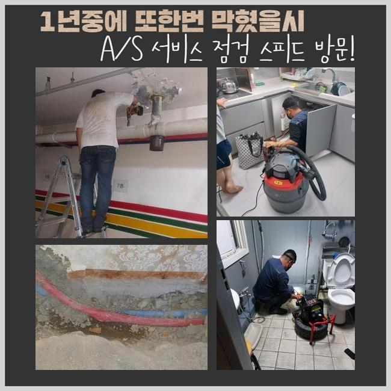
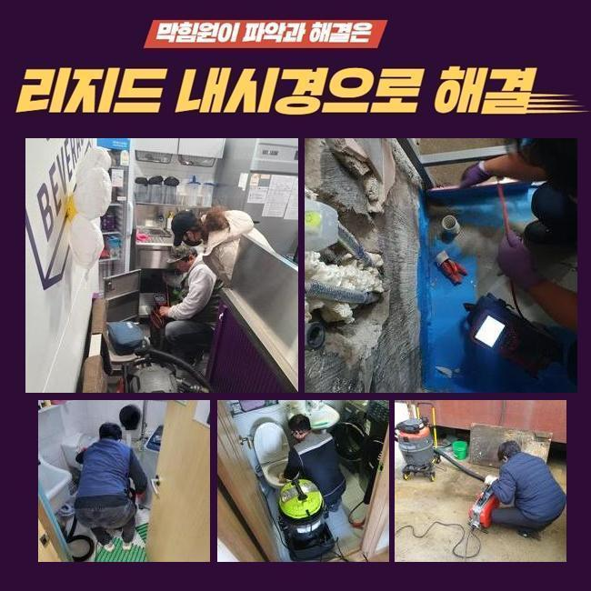
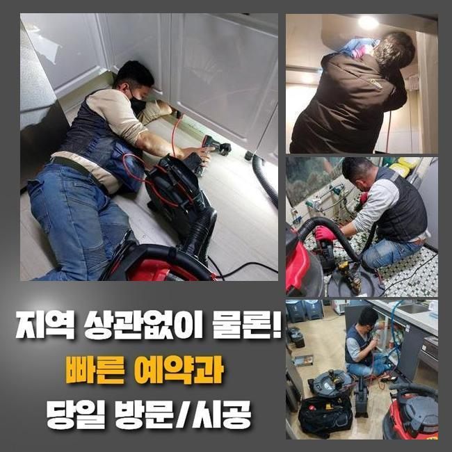
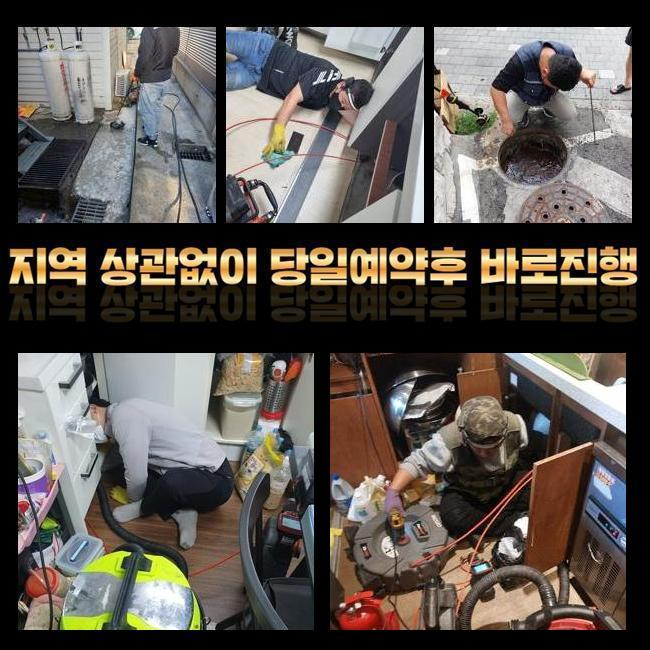
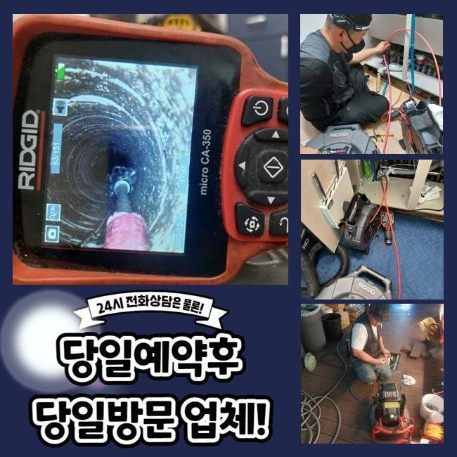
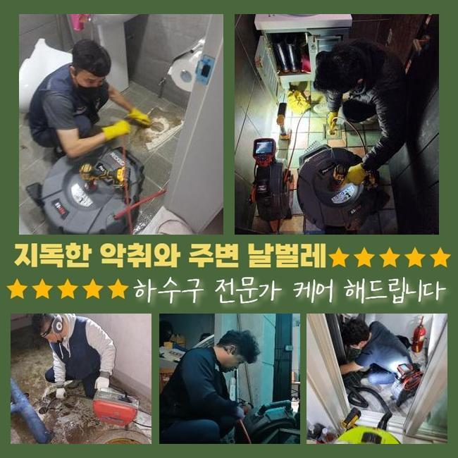

🏠 인천 가정동세탁실역류 왕길동 하수구뚫어주는업체 설비하는곳
인천 싱크대막힘 전문 시공 후기

📋 작업 개요
- 위치: 인천
- 서비스 유형: 싱크대막힘, 하수구막힘, 배관막힘, 역류해결, 뚫는업체, 설비공사
- 작업 일시: 2025. 4. 5. 10:05
- 업체명: 하수구수사대 (010-5615-2118)
🔍 문제 상황
인천 가정동세탁실역류 왕길동 하수구뚫어주는업체 설비하는곳
일상생활을 하는 아파트 등에서 배수기능이 마비된다면 골치아픈 정황을 직면하게 될것입니다
이후에 근방의 시설업자를 불러 처리하려고 계획하시는 고객님들이 많아요
그때 정확한 사유를 알아내지 못한채로 간단히 배수기능만 회복시키고 끝내는 업체가 많아서 재발이 일어나기 쉬운데요
금번 출장장소는 주방공간의 배관 막힘문제로 진단요청을 하신 경우였답니다
현장에 당도하니 고객께서 안에 없으셨는데요
그러고 나서 즉각적으로 문자메시지를 활용하여 출입문번호를 찍어주셨고 말끔하게 수리해달라는 부탁을 하셨답니다
업무가 바쁘신 경우에 이렇게 시공을 취하시는 손님들도 있으십니다
노후화된 주택의 경우 1년에 한차례 이상 배관관리를 받으셔야 급작스러운 문제들이 나타나지 않아요
방문지는 1년전 욕실배관 고장으로 왔던적이 있어요
이후에 저희 전화번호를 저장하셨다가 금번에 전화를 하셨다 말씀하셨어요
수리를 마칠무렵 의뢰자께 주방공간도 빈번하게 정체현상이 발발하는 지점이기에 유사한 상황이 나타났을때 해결하는 방도를 안내하였는데요

🔎 원인 분석
💡 전문가 진단: 정밀 진단 장비를 사용하여 슬러지의 고착 여부를 판명하고 타격/세척 작업을 실시했습니다.
그래서 시도를 해보았지만 해결이 난망하여 검사를 받고 고치기로 결단하신 케이스입니다
여긴 의뢰자분의 즉각적인 연락으로 곧장 이동하여 민첩하게 본시공을 진행할수 있었답니다
고장이 일어났을때 바로 수선받아야하는 중대한 사유는 배수관 고장이 점차적으로 수리하기 까다로운 상황으로 악화되기 때문이죠
막힘이 가중되면 공사시간이 길어질뿐만 아니라 공사비도 증가하기 쉽죠
개수대막힘이 촉발되면 배수가 되지 않아서 고충이 야기되고 점진적으로 구린내도 퍼져나갈수 있죠
악취발생은 불편함은 물론이고 위생의 문제도 불러올수 있으므로 조속히 정리해야 하겠죠
배수관 정체는 전조증상 없이 생길수 있고 비나 눈이 내리거나 긴기간 이용하지 않았다면 한층더 잦게 퍼져나갈수 있죠
싱크대로 이동하여 정체의 사유를 빨리 찾아내려 우선적으로 관측을 진행하였습니다
비슷한 증상을 생각했을때 외관상으로도 정체시공현장을 대부분 판단할수 있답니다
다만 그것으론 명확하게 트러블을 분석하는건 역부족이기에 내시경cctv로 깊이있는 관찰을 속행해야 하겠죠
일단은 싱크대의 근방에 오손된 자취가 많았었고 크고작은 잔재들이 관을 막아버리는 상황이었기에 석션기계를 활용해 배관입구를 정비해 주었죠
이후 관로의 하부쪽을 조사하기 위해서 내시경장비를 삽입하여 검사하기 시작했습니다
배관카메라로 진단을 해보았더니 관로 중하단에 기름때를 비롯하여 다양한 잔재들이 적층을 이루고 있었어요

🔧 작업 과정
배관안에 상존하전 잔존물들과 뒤얽혀서 길목이 막혀있었고 석회물질이 불규칙하게 누적돼 한층더 물의 흐름을 힘겹게 만들었어요
이 상황에서 즉각 분쇄공정을 감행한다면 관로에 크랙이 발발할수가 있답니다
그러하기에 희석제를 활용하여 이물들을 어느정도 녹이고 본시공을 이어나가야 됩니다
만일에 내시경진단 과정이 누락되었다면 화학성분을 쓰지 않았을수도 있고 적은 양만을 투입해서 찌꺼기 처리가 올바르게 진행되지 않았겠죠
그리되면 거듭해서 파이프를 관측하는 공정이 이어질것이고 시공이 길어질수가 있답니다
내시경으로 체크만 꼼꼼하게 한다면 예상된 계획을 벗어나지 않고 청결하게 소제된다는걸 설명드립니다
따라서 아무리 미미한 막힘이라도 배관내시경은 불가결한 기기라고 안내드립니다
30분 가까이 석회찌꺼기들이 무너질때까지 참을성을 가지고 대기해 줍니다
그후 스케일링을 안전하게 진행하게 되었죠
찌꺼기가 배관입구쪽에 상존한다면 세정이 신속하게 될수 있을겁니다
하지만 하단부까지 누적된 상황이 많기 때문에 여러가지 방안을 시도해봐야 된다는점을 일러드려요
거기에 더해 침전물의 성질을 제대로 알고 있어야만 순조롭게 정비가 시행될수 있답니다
이후 배수관의 정체를 능동적으로 처리하기 위하여 분쇄 장비를 사용하기로 합니다
플렉스샤프트는 내부에 체결된 체인노커가 빠른 속도로 움직이며 노폐물을 분쇄하는 일을 해줍니다
그렇지만 미숙한 솜씨로 업무가 시행된다면 배관면이 훼손될수 있기에 어느정도의 기술수준이 요청되죠
분쇄된 퇴적물을 외부로 빼내보았더니 백회질을 포함하여 설거지 중에 쓰이는 물질들도 보이더라고요
금번 방문드린 현장은 음식 폐기물을 갈아낸뒤 배관으로 흘려보내는 시스템이었기에 사태가 증대되었던 것이죠
샤프트시공이 절반이상 진행되었고 석션장비로 빠르게 빨아들여 쉽게 시공이 종료되었답니다
통수작업을 정리하면서 내시경기기로 안쪽을 거듭 확인하였고 청결하게 정비된걸 확정적으로 검증할수 있었죠
고객님께 주방배수시설의 관리방안을 한번더 설명해드리고 시공을 끝마쳤답니다


✅ 작업 완료
개수대에서 물막힘이 일어나면 조리과정에 굉장한 불편함을 촉발하게 될겁니다
배관정체가 나타났을시엔 즉각적인 수리가 우선되어야 할것이며 전문업체에 의뢰를 하시는게 중요하죠
업체를 찾으실때 싼 시공비만 강조하는 곳은 웬만하면 선택하지 않는게 좋습니다
경험이 부족한 곳에선 시공후 배관카메라로 확인도 안하고 끝내버릴때도 있죠
그리고 한두달 뒤에 재발하는 상황으로 걱정이신 사람들이 예상보다 많은데요
저희들에게 연락해주시면 빠른 검사와 정밀한 작업을 약속드리겠습니다




⚠️ 주방 싱크대 배관 막힘 예방 수칙
- ✅ 기름기가 묻은 식기나 프라이팬은 설거지 전 키친타올로 반드시 기름때를 닦아내세요.
- ✅ 주기적으로 싱크대 개수대에 뜨거운 물을 가득 받아 한 번에 내려 배관 내부 기름을 씻어내세요.
- ✅ 배수구 거름망을 미세한 필터로 사용하시고 음식물 찌꺼기가 틈으로 새어 들지 않게 관리하세요.
- ✅ 베이킹소다와 식초를 뜨거운 물과 함께 일주일에 한 번씩 부어주면 배관 살균과 막힘 예방에 좋습니다.
💡 핵심 정리
- 확실한 장비 작업(내시경 점검 및 샤프트 스케일링)으로 원인을 뿌리 뽑습니다.
- 작업 후 1년 이내에 동일한 부위 재발 시 100% 무상 A/S 서비스를 보장합니다.
- 서울 · 경기 · 인천 전 지역에 24시간 언제든 긴급 출동할 수 있도록 항시 대기 중입니다.
❓ 자주 묻는 질문 (FAQ)
🚨 인천 싱크대막힘 문제로 고민이신가요?
정확한 원인 진단과 확실한 시공으로 재발 없는 해결을 약속드립니다.
24시간 긴급 출동 | 서울 · 경기 · 인천 전지역 | 1년 내 재발 시 무상 A/S